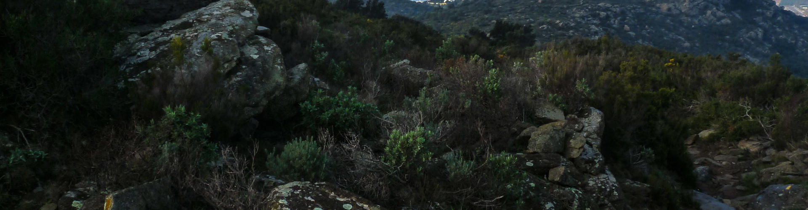

Ruta · Roses
Aquest breu itinerari ens permet visitar la zona megalítica de la Casa Cremada per acabar pujant la carena fins a tocar el pla de les Gates i enllaçar amb el camí que baixa seguint la vall de la…